수업 도우미 · 수행평가 · PAPS · 건강체력교실 · 줄넘기 · 색깔 매트 놀이터 · FMS 도전 · 스포츠클럽 여덟 프로그램을 하나로 묶은 통합 프로그램입니다. 학생 명단 한 번으로 모든 모듈이 돌아가고, 자료는 선생님 구글 시트에 저장되며, 학생은 태블릿·컴퓨터 어디서든 자기 비밀번호로 들어와 기록하고 배지를 모읍니다. 초등학교·중학교 어느 쪽으로도 쓸 수 있습니다.
3.0부터 화면이 GitHub에서 오는 새 화면이 생겨 앱처럼 설치해 쓰고 화면 수정이 저절로 반영되며, 3.1에서 세특 초안(AI 다듬기)·새 학년도 시작·로그인 새 소식·학생용 QR·사용 학교 알림·줄넘기 전국 현황판 참여·급수 인증·인증서·상장·우리 반 줄넘기 여행이, 3.3에서 사이드바 모듈 순서 바꾸기가 들어갔습니다.
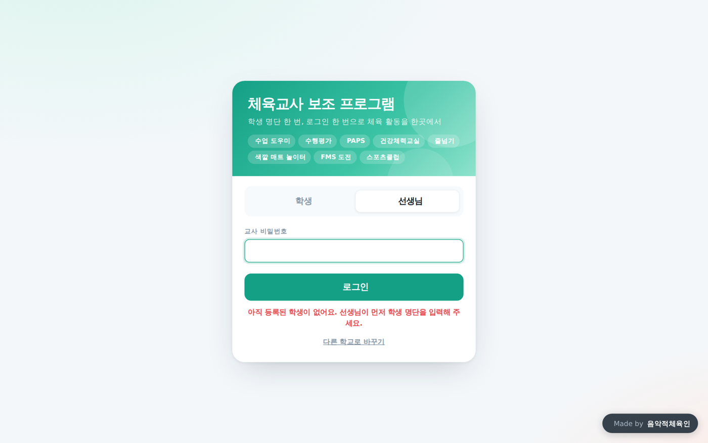
프로그램 본체는 제가 관리하는 라이브러리에 있고, 선생님 시트에는 껍데기 스크립트(Code.gs) 한 장만 들어갑니다. 그 껍데기와 라이브러리 연결이 이미 되어 있는 견본 시트를 사본으로 받으면 되니, 파일을 붙여 넣거나 스크립트 ID 를 칠 일이 없습니다. 초등학교든 중학교든 설치 방법은 같습니다. (이미 쓰고 있는 학교는 11장 "새 버전 적용"만 보면 됩니다.)
1234. 로그인 → 설정 → 화면 방식 → "새 화면" 으로 바꾸고 저장하면(권장) 같은 주소로 들어와도 GitHub 새 화면이 열리고(3장), 앱처럼 설치하고 화면 수정이 저절로 반영됩니다.?page=teacher 를 붙이면 선생님 탭이 먼저 열립니다. 태블릿에는 그냥 주소를, 선생님 컴퓨터에는 ?page=teacher 붙은 주소를 즐겨찾기하세요. 설정 → "접속 주소"에 둘 다, 그리고 학생용 QR이 나옵니다.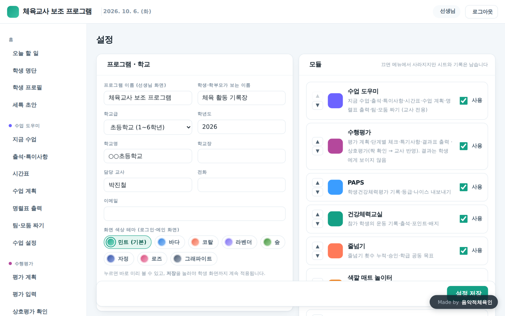
| 항목 | 설명 |
|---|---|
| 교사 비밀번호 | 초기값 1234. 홈에 바꾸라는 안내가 뜹니다. 잊으면 스프레드시트 메뉴 체육교사 보조 → 교사 비밀번호 초기화. |
| 학교급 | 초등학교(1~6학년) / 중학교(1~3학년). 학년 범위·졸업 학년·PAPS 기준표와 종목·쓸 수 있는 모듈이 여기에 따라 달라집니다 (4장). |
| 학교명 · 학년도 · 담당자 | 보고서·명렬표·비밀번호 카드·인증서·상장에 그대로 들어갑니다. 학년도는 기록마다 붙어 새 학년도가 되면 지난해 기록이 화면에서 빠집니다. |
| 화면 방식 3.0 | 기존 화면 | 새 화면. 새 화면을 고르면 같은 주소로 들어온 사람이 GitHub 새 화면으로 열립니다(3장). 문제가 생기면 여기서 기존으로 되돌리거나 주소 뒤에 ?classic=1. |
| 화면 색상 테마 | 민트(기본)·바다·코랄·라벤더·숲·자정·로즈·그래파이트 8가지. 저장해야 학생 화면까지 적용. |
| 학생용 프로그램 이름 | 학생이 보는 로그인·학생 화면의 제목 (기본 "체육 활동 기록장"). |
| 학생이 들어오는 방식 | 숫자판(태블릿, 4자리 비밀번호 · 기본) / 입력칸(키보드) / 이름만 누르기(선생님 컴퓨터에서 학생을 불러 보여줄 때). |
| 모듈 · 순서 3.3 | 쓰지 않는 모듈은 끄세요(사이드바에서 사라지고 자료는 남음). 줄마다 ▲▼로 사이드바 순서를 바꾸고 저장하면 바로 반영되고, 학생 화면도 같은 순서입니다. 중학교에서는 FMS 도전이 목록에 아예 나오지 않습니다. |
| AI 키 3.1 | 설정 왼쪽 아래 AI 키(Gemini) 한 곳에 넣으면 줄넘기 응원 문구·매트 퀴즈 문제·세특 AI 다듬기가 모두 이 키를 씁니다(8장). 없어도 모든 기능이 기본 문구로 돌아갑니다. |
| 접속 주소 · QR | 학생용 주소와 선생님 주소, 학생용 QR 코드. "QR 인쇄"로 교실에 붙여 두면 새 태블릿·휴대폰에서 찍자마자 열립니다. |
| 업데이트 · 사용 학교 알림 | 지금 판과 이번 판에서 바뀐 것, 새 버전이 있으면 적용 순서(11장). 그 아래 사용 학교 알림(12장). |
명렬 붙여넣기로 반마다 넣습니다. 한 줄에 번호 이름 성별. 엑셀·나이스에서 복사한 탭 구분도 그대로 되고 성별은 빼도 됩니다. 학생마다 바뀌지 않는 학생ID가 붙고 학년·반·번호는 올해 속성이라 다음 해 새 학년도 시작을 해도 기록이 이어집니다(10장). 초기 비밀번호는 자동으로 만들어져 명단에 보이고, 비밀번호 카드 인쇄로 나눠 주면 학생이 첫 로그인 뒤 자기 번호로 바꿀 수 있습니다. 전학 간 학생은 삭제보다 전출 처리가 기록 보존에 좋습니다.
새 화면은 화면(HTML)을 선생님 시트가 아니라 GitHub 한 곳에서 가져오고, 저장은 지금처럼 선생님 시트에 하는 방식입니다. 화면이 고쳐지면 모든 학교에 저절로 반영되고(라이브러리를 올릴 필요 없음), 태블릿·휴대폰 홈 화면에 앱으로 추가해 주소창 없이 열며, 구글 웹앱 위쪽의 "이 앱은 Google에서 만들지 않았습니다" 띠가 없습니다. 자료는 한 조각도 GitHub로 가지 않습니다 — 화면 파일만 거기서 옵니다.
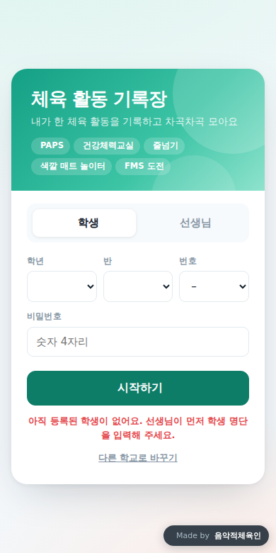
| 이런 점이 달라요 | 설명 |
|---|---|
| 화면 수정이 저절로 | 버튼 위치·글자·새 메뉴 같은 화면 수정은 GitHub에 올리는 순간 모든 학교에 반영. 앱을 열 때 새 판을 저절로 받습니다(새로고침 요령 필요 없음). |
| 라이브러리는 서버가 바뀔 때만 | 저장·계산 방식(.gs)이 바뀌는 판만 라이브러리를 올립니다. 새 화면이 더 새 기능을 알고 있으면 "라이브러리를 올리면 쓸 수 있어요"라고 안내합니다. |
| 앱처럼 설치 | 안드로이드·PC Chrome: 로그인 화면 아래 "홈 화면에 앱으로 추가". 아이폰·아이패드: 공유 → 홈 화면에 추가. 아이콘 하나로 열리고 여는 속도도 빨라집니다. |
| 주소는 그대로 | 학생용 주소·QR·즐겨찾기는 그대로입니다. 새 화면이 학교 주소를 기기에 기억해 두고, 학교 주소가 바뀌면(11장) 저절로 새 주소로 옮겨 갑니다. |
| 되돌리기 | 설정 → 화면 방식 → 기존 화면, 또는 주소 뒤에 ?classic=1. |
| 판 번호 | 새 화면도 학교 프로그램과 같은 번호(3.3.x)를 씁니다. 설정 → 업데이트 칸에 둘 다 보입니다. |
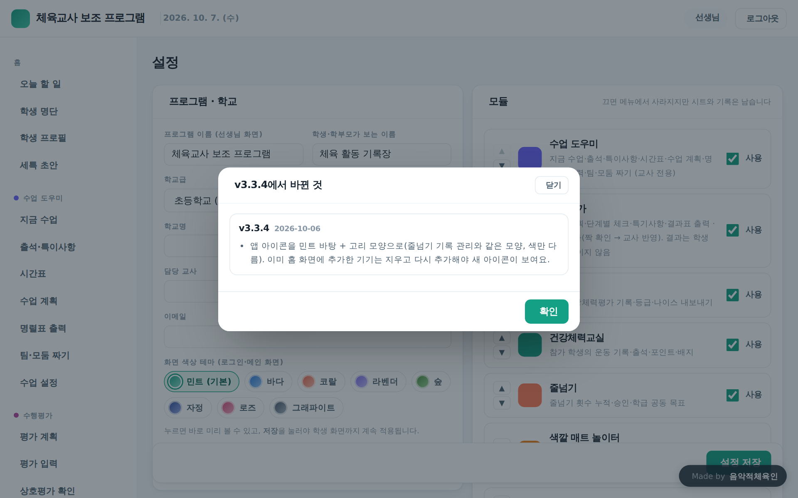
같은 프로그램, 같은 라이브러리를 초등학교와 중학교가 함께 씁니다. 설정의 학교급만 고르면 학년·졸업·PAPS 기준·모듈이 그 학교급에 맞게 바뀝니다. 중학교 선생님은 설치를 마친 뒤 첫 설정에서 중학교로 바꾸고 저장하면 됩니다.
| 학교급을 바꾸면 | 초등학교 | 중학교 |
|---|---|---|
| 등록 학년 | 1~6학년 (기본 전체) | 1~3학년 |
| 새 학년도 → 졸업 | 6학년이 졸업 처리 | 3학년이 졸업 처리 |
| PAPS 대상 학년 · 기준 | 3~6학년 · 별표 4 초등 | 1~3학년 · 별표 4 중등(왕복오래달리기 20m, 팔굽혀펴기 여학생 무릎대고) |
| 모듈 | 여덟 모듈 전부 | FMS 도전 제외 |
| 수업 도우미 · 줄넘기 | 학년 선택 1~6 | 학년 선택 1~3. 줄넘기 대상 학년은 전체로 초기화 |
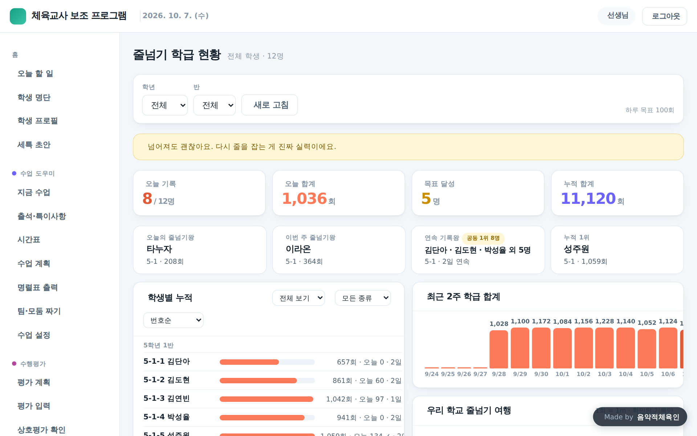
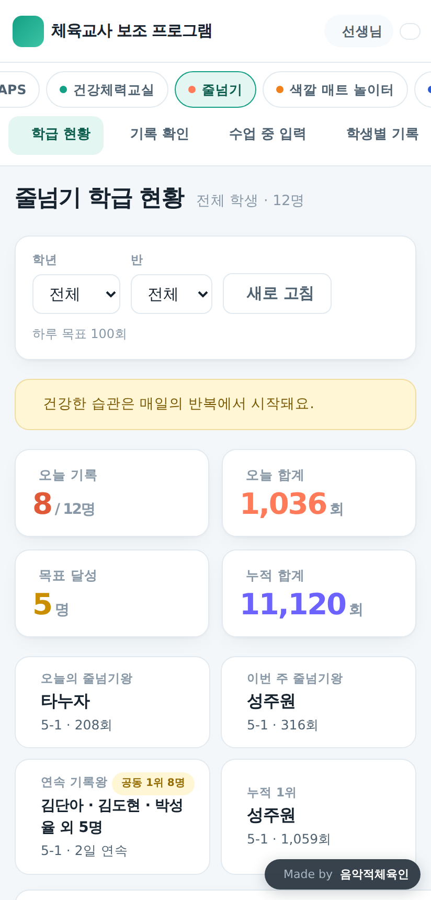
| 교사 메뉴 | 하는 일 |
|---|---|
| 오늘 할 일 | 재학생·켜진 모듈 수, 모듈별 현황 카드(지금 수업, 측정 완료 인원, 확인 기다리는 기록, 오늘 줄넘기·달성률 1위 학급, 승인 대기 도전 …). 카드를 누르면 그 화면으로. 새 버전·주소 변경 알림도 여기에. |
| 학생 명단 | 명렬 붙여넣기, 직접 추가, 비밀번호 초기화·카드 인쇄, 졸업·전출, 삭제. 모든 모듈이 이 명단 하나를 씁니다. |
| 학생 프로필 | 학년·반을 고르면 반 전체 배지 현황표, 학생을 고르면 모듈별 카드와 배지 벽 (9장). |
| 세특 초안 3.1 | 학년·반을 고르면 이번 학년도 기록으로 학생마다 체육 세부능력 및 특기사항 초안. AI 키가 있으면 "AI로 다듬기" (8장). |
| 설정 | 비밀번호, 학교급, 학교 정보, 화면 방식, 학생 로그인 방식, 모듈 켜고 끄기·순서, AI 키, 접속 주소·QR, 업데이트, 사용 학교 알림. |
| 새 학년도 시작 3.1 | 학년도 바꾸기·학년 올리기(마지막 학년 졸업)·졸업·전출 학생 정리를 한 번에. 시작 전에 시트 보관본을 자동으로 만듭니다 (10장). |
| 초기화 | 모듈별로 기록·참가자·사진·계획을 골라 지우기. "모든 기록 선택(명단은 남김)"·"명단까지 전부"·모듈마다 "이 모듈 모두"로 한꺼번에. 되돌릴 수 없으니 먼저 시트 사본. |
스프레드시트 메뉴 "체육교사 보조" — 시트를 열면 위쪽 메뉴에 생깁니다. 상태 점검 · 초기 설정 다시 확인 · 교사 비밀번호 초기화 · 캐시 비우기(시트를 직접 고쳤는데 화면에 반영이 안 될 때) · 업데이트 확인.
학생은 태블릿이나 컴퓨터에서 같은 주소(또는 교실에 붙인 QR)를 열고 학년·반·번호를 고른 뒤 숫자판에 비밀번호 4자리를 누릅니다. 5번 틀리면 1분 잠기고, 3분 동안 아무것도 안 하면 자동으로 나갑니다(설정에서 조정). 처음엔 선생님이 준 번호를 쓰고, 들어간 뒤 "비밀번호 바꾸기"에서 자기 번호로 바꿀 수 있습니다.
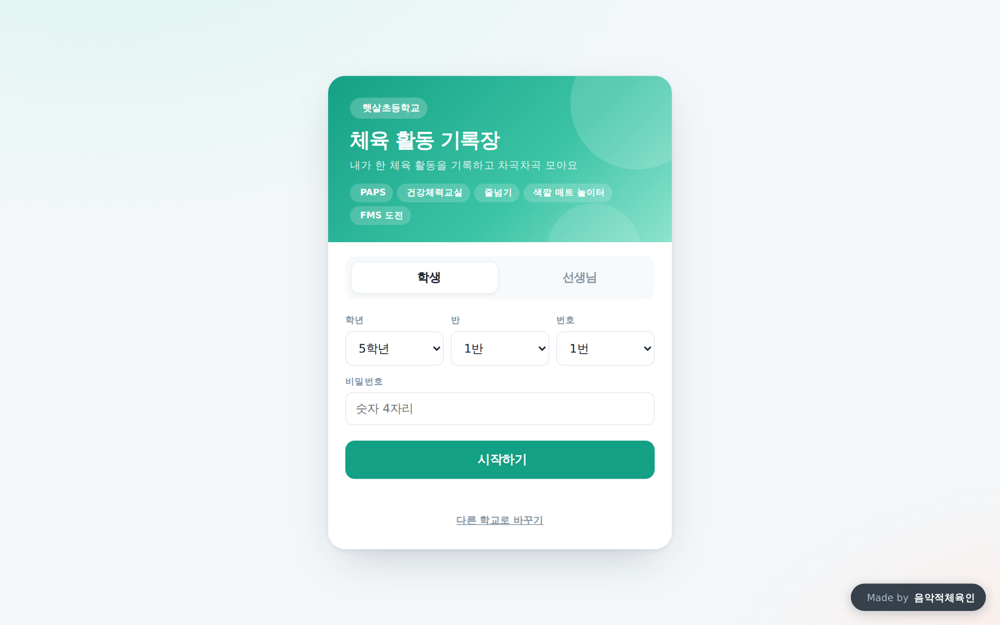
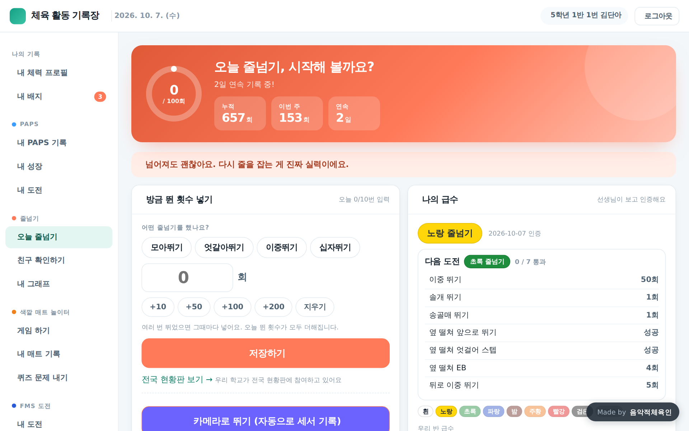
| 학생 메뉴 | 내용 |
|---|---|
| 내 체력 프로필 | PAPS 등급·건강체력교실 포인트·줄넘기 누적·FMS 단계·스포츠클럽 시간 등 요약 카드. |
| 내 배지 | 통합 배지 6개 + 모듈별 배지. 못 받은 배지는 진행 막대로 얼마나 남았는지. |
| 모듈 메뉴 | PAPS(내 기록·내 성장·내 도전), 건강체력교실(오늘 기록하기·내 운동 기록·교실 배지·교실 계획), 줄넘기(오늘 줄넘기·친구 확인하기·내 그래프), 색깔 매트 놀이터(게임 하기·내 매트 기록·퀴즈 문제 내기), FMS 도전(초등), 상호평가(켠 수행평가가 있을 때만). 참여하지 않는 모듈은 보이지 않습니다. |
각 모듈의 자세한 사용법은 v2.4 설명서와 같습니다. 여기서는 핵심 흐름과 v2.4 이후 달라진 점을 적고, 이번에 크게 바뀐 줄넘기는 자세히 적습니다.
시간표를 넣어 두면 지금 수업에 현재 교시·반이 자동으로 뜨고 명렬표를 탭해 출석·특이사항을 남깁니다. 출석·특이사항(반별 매트릭스·출석부 인쇄), 시간표(학기별), 수업 계획(진도표 붙여넣기), 명렬표 출력, 팀·모둠 짜기(성별·PAPS 체력이 고르게, 조건 걸기, 저장·인쇄, 학생 화면에 우리 팀 카드).
학년별 평가 계획(3단계/4단계, 간단/자세히, 표 붙여넣기) → 반별 단계 체크·특기사항 → 결과 조회 → 평가별 결과표·반별 종합표·빈 채점표 인쇄. 상호평가를 켜면 짝이 기준을 체크하고 한마디·사진·영상을 보내고, 단계는 선생님이 찍습니다. 학생에게는 진행 상태와 짝이 찍어 준 사진·영상만 보입니다. 여기 쓴 특기사항은 세특 초안에 그대로 들어갑니다.
측정 종목 확인 → 기록 입력(반별 표, 등급 자동) → 전체 조회 → 나이스 내보내기. 엑셀·한글 표를 붙여넣기로 일괄 입력(머리글 자동 인식, 키·몸무게 → BMI). 학생은 내 기록·내 성장·내 도전.
참가 학생만 메뉴가 생기고, 학생이 오늘 기록하기 → 교사 기록 확인 → 포인트·주간 목표·교실 배지. 운동 기록에서 "집에서 · 줄넘기"를 고르면 카메라로 뛰기가 나와 판정기가 센 횟수가 바로 확인 상태로 들어옵니다(줄넘기 설정의 스위치를 켜면 줄넘기 누적에도 함께).
학생은 오늘 줄넘기에서 뛴 횟수를 그때마다 넣습니다(종류 고르기, 짝 체크, 카메라로 뛰기). 선생님은 학급 현황·기록 확인·수업 중 입력·학생별 기록·급수 인증·인증서·상장·줄넘기 설정. 설정에 AI 키가 있으면 응원 문구를 AI가 하루 한 번 만듭니다.
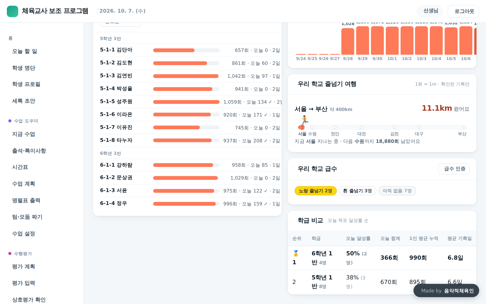
| 교사 메뉴 | 하는 일 |
|---|---|
| 학급 현황 | 오늘 기록·합계·목표 달성·누적, 줄넘기왕(오늘·이번 주·연속·누적, 공동 1위 모두), 학생별 누적(반 고르기 — 전체 보기 / 학년-반, 종류 필터, 오른쪽 열 높이만큼 보이고 그 아래는 스크롤), 최근 2주 그래프, 학급 공동 목표, 우리 반 줄넘기 여행, 우리 반 급수, 학급 비교. |
| 기록 확인 | 학생이 넣은 기록을 확인·반려. 한 건씩, 선택 확인, 모두 확인(짝 확인 중인 것은 빼고). "오늘은 짝 체크로" 스위치. |
| 수업 중 입력 | 수업 시간에 잰 횟수를 반 전체에 한 번에(바로 확인된 기록). |
| 학생별 기록 | 한 학생의 기록을 보고 고치거나 지우기. |
| 급수 인증 3.1.9 | 아래 참고. |
| 인증서 · 상장 3.1.9 | 급수 인증서와 전국 현황판 상장을 A4 가로로 인쇄·PDF. 아래 참고. |
| 줄넘기 설정 | 하루 목표·학급 공동 목표·입력 제한·대상 학년·자동 확인·급수 인증 사용·우리 반 줄넘기 여행(코스·세기 시작한 날)·종류 목록·짝 체크·카메라 판정기·AI 응원 문구, 맨 아래 전국 현황판 참여. |
종류 — 학생이 횟수를 넣을 때 모아뛰기·엇갈아뛰기·이중뛰기·십자뛰기 등 종류를 고릅니다(설정에서 목록 편집, 끌 수도 있음). 학급 현황은 종류로 걸러 보고 학생 그래프에는 종류별 누적선이 함께 나옵니다. 짝 체크 — 학생이 많은 날에만 켜는 선택 기능. 학생이 같은 반 짝을 고르고 짝이 "맞아요"라고 해야 선생님께 옵니다(계수기 사진은 선택). 최종 확인은 언제나 선생님입니다.
전자 줄넘기는 손으로 빙글빙글 돌려도 숫자가 올라가지요. 판정기는 태블릿·노트북·휴대폰 카메라로 관절의 움직임을 읽어 엉덩이와 머리가 같이 뜨고 팔이 돌아갈 때만 1회로 셉니다. 앉아서 팔만 돌리거나 줄 없이 콩콩만 뛰면 세지 않고 화면에 이유가 떠요. 영상은 기기 밖으로 나가지 않습니다.
준비 — 줄넘기 설정 → 카메라 판정기에 판정기 주소(기본값 있음), 기록할 최소 횟수, 민감도(6~16, 기본 10). 학생은 민감도를 못 바꿉니다. v0.7부터 밝은 카드 화면, 10회마다 축하, 전체 화면 버튼, 휴대폰 세로 화면에서 내 모습과 횟수가 나란히. 새 화면에서는 판정기가 앱 안 전체 화면으로 열리고 "앱으로 돌아가기"로 닫으면 방금 기록이 바로 보입니다. 카메라가 센 기록은 짝 체크·교사 확인 없이 바로 확인 상태(입력자 "카메라")이고 전국 현황판에도 바로 올라갑니다.
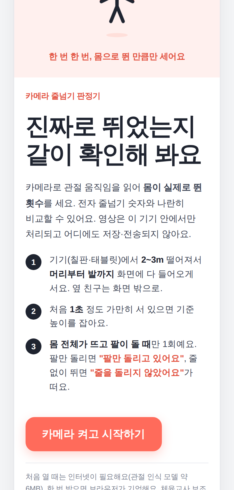
줄넘기 설정 맨 아래 전국 현황판 참여를 켜면 우리 학교의 날짜별 줄넘기 합계가 전국 현황판에 올라가고, 줄넘기 기록 관리 프로그램을 쓰는 학교들과 같은 현황판·기록실에서 함께 겨룹니다. 한 달 단위로 학교 순위(합계·1인당 평균·참여율, 학년별 순위)와 학생 순위를 매기고, 끝난 달은 기록실에 남습니다.
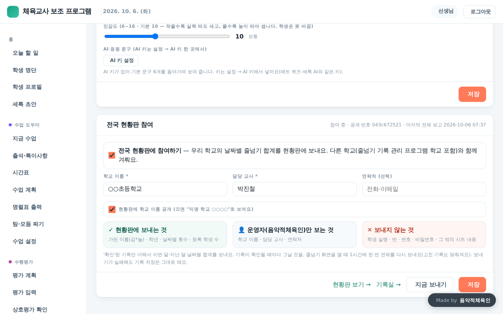
| 현황판에 보내는 것 | 운영자(음악적체육인)만 보는 것 | 보내지 않는 것 |
|---|---|---|
| 가린 이름(김*늘) · 학년 · 날짜별 '확인'된 횟수 · 등록 학생 수(학년별 포함) | 학교 이름 · 담당 교사 · 연락처 (학교 이름 공개를 끄면 현황판에는 "익명 학교 ○○○○"로) | 학생 실명 · 반 · 번호 · 비밀번호 · 그 밖의 시트 내용 |
https://musicalpe.github.io/jumprope/board.html한국줄넘기협회 급수표(흰 → 노랑 → 초록 → 파랑 → 밤 → 주황 → 빨강 → 검은 → 와이어)를 보고 선생님이 항목별로 체크합니다. 한 급수의 항목을 모두 통과하면 그 급수를 딴 것으로 보고, 앞 급수를 못 딴 학생은 잠깁니다(이미 체크된 칸은 해제만).
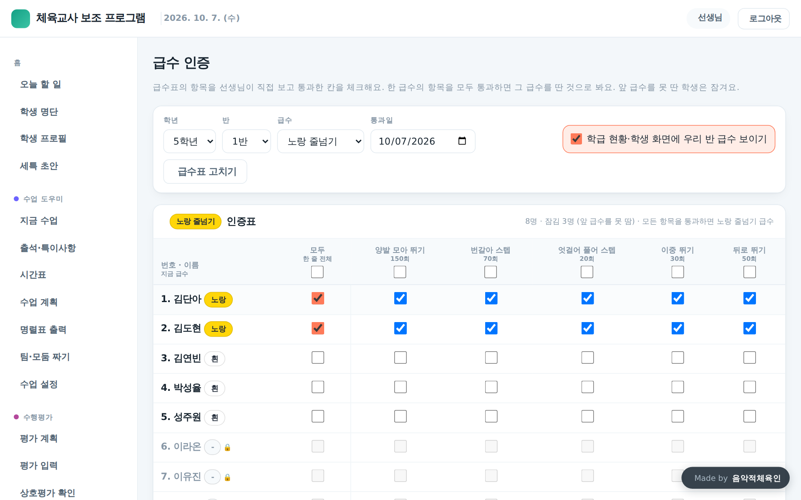
줄넘기_급수는 첫 인증 저장 때 생기고, 학생을 삭제하면 그 학생의 급수도 함께 지워집니다.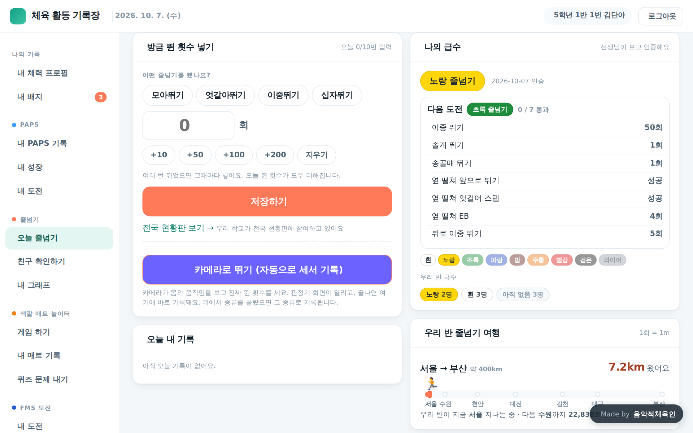
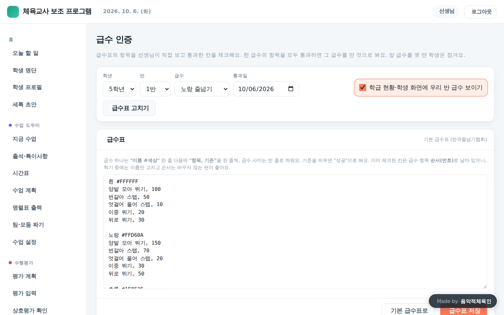
급수 인증서는 반을 고르면 급수를 딴 학생마다 지금 딴 급수 한 장씩, 전국 현황판 순위 상장은 지난달 기록실에서 우리 학교가 받은 순위(학교 합계·1인당 평균·참여율 전국 1~3위, 학생 전국 1~3위, 우리 학교 안 1~3위)마다 한 장씩 나옵니다(현황판에 참여한 학교만). 학교 이름·발급 날짜·직함(담임 / 체육 교사 / 체육 전담 교사 / 직접 입력)·선생님 이름을 넣고 미리보기 → 인쇄 · PDF 저장(인쇄 창에서 "PDF로 저장"). A4 가로입니다.
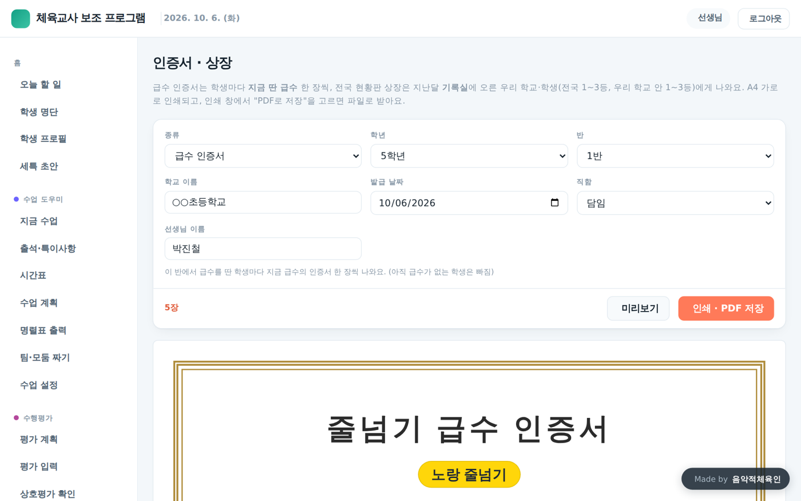
확인된 줄넘기를 1회 = 1m로 바꿔 코스를 따라 나아갑니다. 줄넘기 설정에서 코스(서울 → 부산 400km · 국토 한 바퀴 1,200km · 서울 → 제주 560km · 지구 한 바퀴 40,075km)와 "세기 시작한 날"을 고르면 학급 현황과 학생 화면에 진행 막대가 보입니다. 새로 출발하려면 오늘 날짜를 넣으세요. 학급 공동 목표(누적 ○회)와 같은 숫자를 다르게 보여 주는 것이라, 둘 중 하나만 켜도 됩니다.
바닥에 4색 매트를 놓고 화면의 지시를 보고 그 칸으로 뛰는 게임 10종(색깔 점프 · 색깔 스트룹 · 기억력 스텝 · 리듬 스텝 · 방향 점프 · 퀴즈 점프 · 연상 점프 · 손발 트위스터 · 얼음 스텝 · 용암 매트). 짝과 함께(단계마다 짝이 "뛰고 있어요!") / 혼자 연습을 따로 누적하고 배지. 교사는 학급 현황·게임 통계·짝 배정·수업 모드·퀴즈 문제 은행(AI 문제 받기)·우리 반 그림·설정.
새 화면에서 게임 설정·끝 화면이 밝은 카드 톤으로 바뀌었고(게임 중 화면은 매트 색이 잘 보이도록 검은 바탕 그대로), 리듬 스텝은 단독판 v1.8처럼 블록이 비트세이버처럼 앞으로 다가옵니다 — 화면의 칸 위치가 바닥 매트 칸 위치와 똑같아서 그대로 밟으면 됩니다("위에서 떨어지기(네 줄)"도 설정에서 고를 수 있음). 게임 중 휴대폰 "뒤로"를 누르면 게임이 닫히고 음악도 멈춥니다.
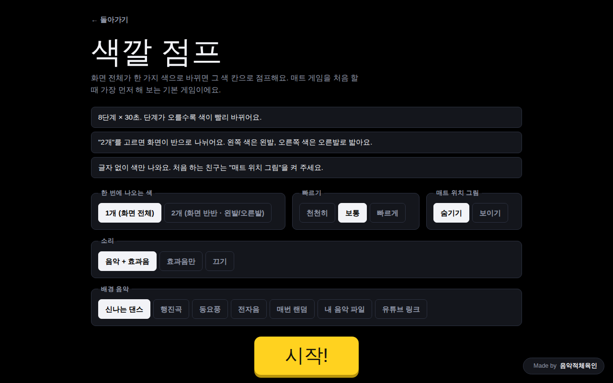
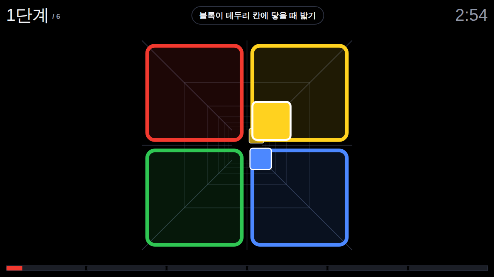
기본 움직임 기술 14가지를 학년군별 준거·단계로 도전. 학생 "내 도전" → 짝 확인(사진·영상 선택/필수) → 교사 승인 → 배지. 교사는 대시보드·관찰평가·승인 대기·학급 현황·학년군 조정·기준표.
클럽을 만들고 전환: 활동 일지·참가 학생·출석부·대회 실적·예산·활동 사진·정산보고서(인쇄·Word·구글 문서). 교내 리그전은 클럽과 따로 도는 학교 전체 리그 — 회차 안에 종목 여러 개, 반 대항/팀 대항/개인전, 라운드로빈 대진 자동 생성, 스코어 → 순위, 일정표·순위표·게시용 대진표 문서.
홈 → 세특 초안에서 학년·반과 글자 한도를 고르고 불러오기를 누르면, 이번 학년도 기록(수행평가 특기사항 · PAPS · 줄넘기 · 건강체력교실 · FMS · 색깔 매트, 고르면 스포츠클럽)으로 학생마다 체육 세부능력 및 특기사항 초안 문장이 만들어집니다. 고쳐 쓴 글은 세특_초안 시트에 저장되고, 글자 수·나이스 바이트 수가 보이며, 반 전체를 표로 복사할 수 있습니다. 학생을 골라 글 지우기(빈칸으로 저장)도 됩니다.
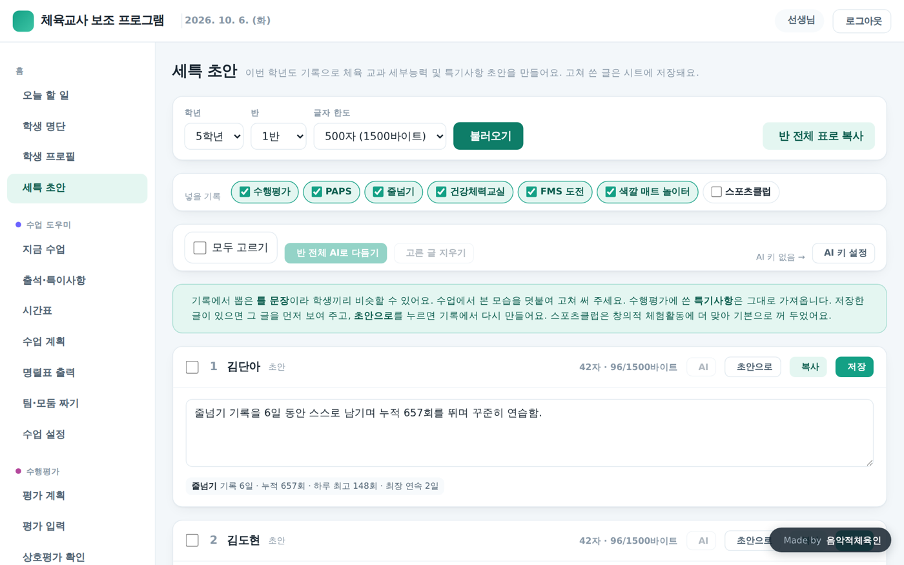
기록에서 뽑은 틀 문장이라 학생끼리 비슷할 수 있어요. 설정에 AI 키가 있으면 AI 단추(한 명) 또는 반 전체 AI로 다듬기(고른 학생, 안 고르면 반 전체)로 학생마다 기록 사실로 서로 다른 문장을 써 줍니다. 선생님이 칸에 쓴 관찰 내용을 가장 먼저 살리고, 이름·성별·학교는 보내지 않으며, 기록에 없는 일은 지어내지 않게 했습니다. 쓴 글은 바로 저장되고 "초안으로"로 언제든 되돌립니다.
설정 왼쪽 아래 AI 키(Gemini)에 키를 넣고 "시험해 보기". 줄넘기 응원 문구·매트 퀴즈 문제·세특 다듬기가 모두 이 키를 쓰고, 앞으로 생길 AI 기능도 여기 키를 씁니다. 키는 선생님 시트의 숨긴 속성에만 저장됩니다. Google AI Studio에서 무료 키를 만들 수 있습니다(aistudio.google.com → Get API key). 키가 없어도 모든 기능이 기본 문구로 돌아갑니다.
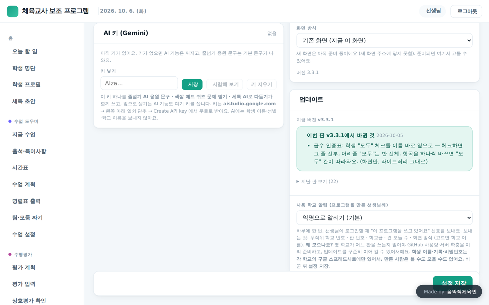
모듈마다 따로 있던 성취를 학생 한 명 기준으로 모아 봅니다. 학생 화면 "내 배지", 교사 화면 "학생 프로필"이 같은 자료를 보여 줍니다.
| 통합 배지 | 조건 |
|---|---|
| 첫 발걸음 | 어떤 활동에서든 첫 배지를 받음 |
| 두 가지 활동 · 세 가지 활동 | 배지를 받은 모듈이 2개 · 3개 |
| 체육 만능 | 참여하는 모든 모듈에서 배지를 받음 |
| 배지 수집가 · 배지 마스터 | 배지 10개 · 30개 |
모듈 배지(교실 배지·줄넘기 배지 15개·매트 배지·FMS 도전 단계·PAPS 도전 배지)는 기존 기록에서 자동 계산되므로 따로 입력할 것이 없습니다.
새 학년도 시작(3.1)은 예전의 "학년 올리기"를 한 화면에 모은 것입니다. 시작 전에 시트 보관본(사본)을 자동으로 만들고, 학년도를 바꾸고, 재학생 학년을 올리며(마지막 학년은 졸업 처리), 고르면 이미 졸업·전출한 학생을 정리합니다. 끝나면 이어서 할 일(새 명렬 붙여넣기 → 기존 학생 채우기)을 안내합니다. 학생ID는 그대로라 지난 기록이 이어집니다.
자료는 어디에 — 모두 선생님 스프레드시트의 시트(학생, 설정, 수업_*, 평가_*, PAPS_*, 체력_*, 줄넘기_*, MAT_*, FMS_*, 클럽_*, 세특_초안, 숨김 시트 _속성)에 있고, 사진은 선생님 드라이브 폴더에 있습니다. 백업은 파일 → 사본 만들기면 충분합니다. 시트를 직접 고쳤으면 메뉴 캐시 비우기.
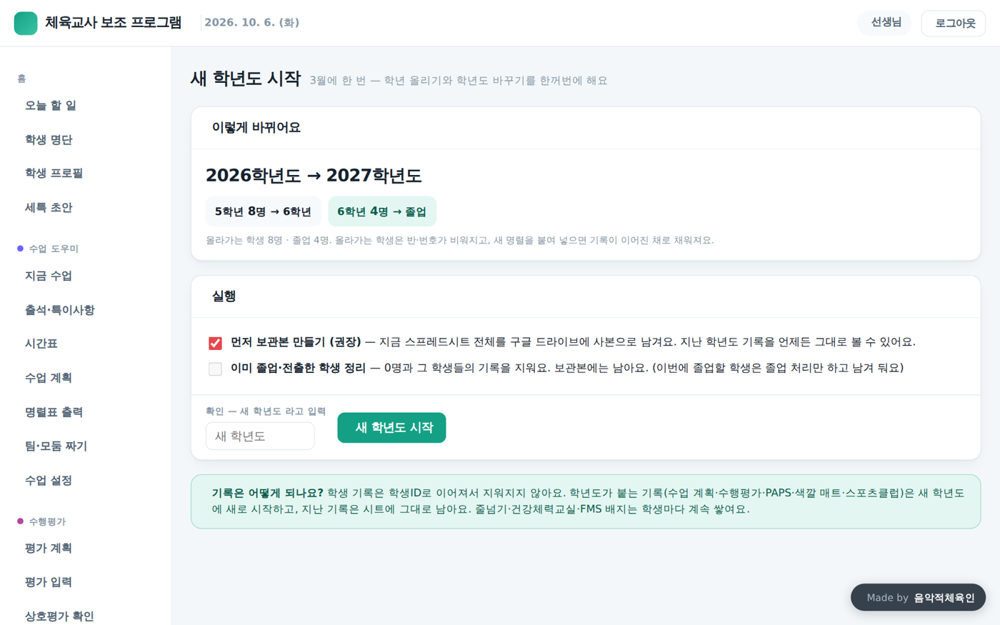
새 버전이 나오면 프로그램이 알아서 알려 줍니다. 선생님이 로그인할 때 새 소식 창과 홈 알림이 뜨고, 설정 → 업데이트 칸에 적용 순서가 나옵니다. 파일을 다시 붙여넣을 필요는 없습니다. 새 화면을 쓰면 화면만 바뀐 판은 아무것도 할 게 없고, 라이브러리(서버)가 바뀐 판만 아래 세 단계입니다.
자료도 주소도 그대로입니다. 끝나면 프로그램 화면을 새로 고치면 버전 숫자가 바뀌어 있습니다. 권한이 새로 필요한 판이면 배포 때 "액세스 승인"이 한 번 더 뜨는데 1장과 같이 허용하면 됩니다. 업데이트를 미뤄도 지금 버전이 그대로 돌아가니 급하지 않습니다. 껍데기(Code.gs)는 3.0.0 때 doPost 한 줄이 늘어난 뒤로 그대로입니다 — 2.x에서 올라오는 학교만 첨부 shell/Code.gs 를 한 번 다시 붙여 넣으세요(파일 이름은 Shell.gs 든 Code.gs 든 상관없습니다).
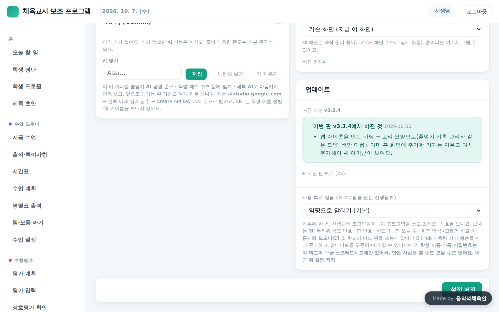
기록은 그대로입니다. 선생님이 로그인할 때 "학생용 주소가 바뀌었어요 — QR 다시 인쇄" 알림이 뜨고, 옛 주소(교실 QR·즐겨찾기)로 들어온 사람에게는 "새 주소로 열기" 버튼이 나옵니다. 새 화면을 쓰는 기기는 저절로 새 주소로 옮겨 갑니다. 설정 → 접속 주소에서 QR을 다시 인쇄해 붙이고, 교실 QR을 다 바꾼 뒤 옛 배포는 보관처리하면 됩니다.
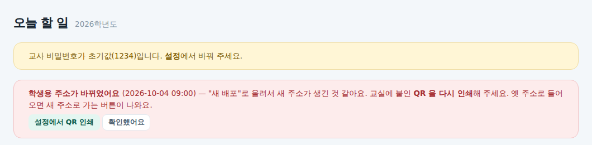
설정 → 업데이트 칸 아래에 사용 학교 알림이 있습니다. 하루 한 번 "이 프로그램을 쓰고 있어요" 신호를 만든 선생님께 보냅니다. 기본은 익명이고, 학교 이름도 알리기 / 알리지 않기로 바꿀 수 있습니다.
| 왜 모으나요 | 보내는 것 (익명) | 끄는 방법 |
|---|---|---|
| 새 화면이 GitHub에서 오기 때문에 GitHub 사용량과 서버 확충을 미리 준비하고, 어느 판을 몇 학교가 쓰는지 알아야 업데이트를 꾸준히 이어 갈 수 있어서입니다. | 무작위 학교 번호 · 판 번호 · 학교급 · 켠 모듈 수 · 화면 방식. "학교 이름도 알리기"를 고르면 학교 이름을 함께. | 설정 → 업데이트 아래 → 알리지 않기. 끄면 아무것도 보내지 않고 모든 기능은 그대로입니다. |
Q. 제 자료가 선생님(제작자) 쪽으로 가나요?
A. 아니요. 프로그램 코드만 라이브러리에서 빌려 쓰고, 실행은 선생님 계정에서, 저장은 선생님 시트와 드라이브에만 됩니다. 사용 학교 알림(12장)은 학교 수와 판 정보만이고 끌 수 있으며, 전국 현황판(7장)은 참여를 켠 학교만 가린 이름·횟수를 보냅니다.
Q. 새 화면으로 바꾸면 학생 주소가 바뀌나요?
A. 아니요. 같은 주소·QR로 들어오면 새 화면이 열립니다. 되돌리려면 설정 → 화면 방식 → 기존 화면.
Q. 급수 인증 메뉴를 눌렀더니 "라이브러리 50 이상이 필요해요"라고 나와요.
A. 새 화면이 학교 프로그램보다 앞서 있는 것입니다. 11장대로 라이브러리 버전을 올리면 바로 쓸 수 있습니다.
Q. 전국 현황판에 참여했더니 "학생 입력 자동 확인"이 꺼졌어요.
A. 의도된 것입니다. 참여 중에는 선생님이 확인한 기록과 카메라 기록만 현황판에 올라가야 공정하기 때문에 자동 확인을 켤 수 없습니다. 기록 확인 화면의 "모두 확인"으로 빠르게 확인하세요.
Q. 학생이 구글 계정이 있어야 하나요?
A. 없어도 됩니다. 배포할 때 "모든 사용자"로 했기 때문에 주소만 있으면 열리고, 학생은 프로그램 안의 비밀번호 4자리로 들어옵니다.
Q. 주소를 열면 "스크립트 기능이 완료되었지만 아무것도 반환하지 않았습니다"가 나와요.
A. 라이브러리가 연결되지 않은 상태입니다. 1장 3번(라이브러리 PE 추가)을 확인하고 배포 관리 → 새 버전을 다시 해 주세요. "PE is not defined"면 식별자를 PE 로 고치세요.
Q. 처음 열 때 오래 걸려요.
A. 첫 접속 때 시트 30개쯤을 만들어서 그렇습니다. 한 번 만들어진 뒤로는 2~3초 안에 열립니다.
Q. PAPS 등급이 "기준 없음"으로 나와요.
A. 학교급과 학생 학년이 맞는지 보세요. 초등 1~2학년은 기준표가 없습니다. 학교급을 바꾼 직후라면 메뉴 체육교사 보조 → 캐시 비우기.
Q. 교사 비밀번호를 잊었어요.
A. 스프레드시트 메뉴 체육교사 보조 → 교사 비밀번호 초기화 → 1234.
Q. 시트를 직접 고쳤는데 화면이 그대로예요.
A. 화면이 6시간 동안 시트 내용을 기억합니다. 메뉴 체육교사 보조 → 캐시 비우기.
Q. 사진은 어디에 저장되나요?
A. 시트가 있는 드라이브 폴더 안에 "스포츠클럽 사진·보고서", "건강체력교실 사진·결과물", "줄넘기 짝 확인 사진", "FMS 도전 인증 사진·영상", "색깔 매트 놀이터 그림" 폴더가 생기고 거기에 저장됩니다. 시트에는 파일 ID만 남습니다.
Q. 두 학교(두 시트)에서 쓰고 싶어요.
A. 시트마다 1장을 반복하면 됩니다. 라이브러리는 같은 것을 씁니다.
Q. 오프라인판도 있나요?
A. 있습니다. 인터넷·구글 계정 없이 파일 하나로 도는 판이고 같은 판 번호(3.3.0)를 씁니다. 새 화면·전국 현황판·사용 학교 알림처럼 인터넷이 필요한 것은 빠지고, 급수 인증·인증서·세특 초안·새 학년도 시작은 똑같이 됩니다. 별도 설명서를 참고하세요.
지난 인디스쿨 공유(v2.2) 이후 바뀐 것입니다. 판 번호 옆은 라이브러리 버전입니다.
설정 → 모듈에서 ▲▼로 사이드바 모듈 순서를 바꿈(저장하면 바로 반영, 학생 화면도 같은 순서). 새 화면 3.3.x: 줄넘기 학생별 누적 표에 반 고르기(전체 보기 / 학년-반)와 오른쪽 열 높이에 맞춘 스크롤, 급수 인증표의 "모두" 체크를 이름 옆으로.
줄넘기에 급수 인증(한국줄넘기협회 급수표, 항목별 체크, 앞 급수 잠금, 급수표 고치기, 학생 화면 나의 급수, 학급 현황 우리 반 급수) · 인증서·상장(급수 인증서, 전국 현황판 상장, A4 가로 인쇄·PDF, 직함) · 우리 반 줄넘기 여행(1회 = 1m, 4개 코스) · 기록 확인 "모두 확인" · 줄넘기왕 공동 1위 · 전국 현황판에 학년별 등록 수 · 학생 삭제 시 급수도 삭제.
전국 현황판 참여 중에는 "학생 입력 자동 확인"이 꺼지고 켤 수 없음 — 선생님이 확인한 기록과 카메라 기록만 현황판에.
줄넘기 설정 → "전국 현황판 참여" — 줄넘기 기록 관리 프로그램 학교들과 같은 현황판·기록실. 가린 이름·학년·날짜별 횟수·등록 학생 수만 보냄. 학생 화면에 현황판 링크.
색깔 매트 놀이터 리듬 스텝 새 모습(단독판 v1.8) — 블록이 앞으로 다가옴, 화면 칸 = 매트 칸.
"새 배포"로 학생용 주소가 바뀌었을 때 — 선생님 홈 알림(QR 다시 인쇄), 옛 주소로 들어오면 "새 주소로 열기", 새 화면 기기는 자동 이동. 적용 순서 안내에 "새 배포는 누르지 마세요".
사용 학교 알림(익명 기본 · 학교 이름도 · 알리지 않기). 3.1.4(44)는 만든 선생님 학교 전용 현황 칸.
AI 키를 설정 한 곳에서 — 줄넘기 응원 문구·매트 퀴즈·세특이 같은 키.
세특 초안 "AI로 다듬기"(한 명씩 / 고른 학생 / 반 전체), 글 지우기. 선생님 로그인 새 소식 창.
세특 초안(홈), 새 학년도 시작(설정, 보관본 자동), 학교마다 따로인 저장 잠금, 홈 현황 2분 기억, 초기화 한꺼번에 고르기, 휴대폰 탭 첫 화면 바로 열기, 매트 놀이터 밝은 화면.
교사 로그인 빨라짐(화면 먼저, 카드는 뒤에). 학생 로그인 직후 빈 화면 수정. 학생용 QR이 화면 방식을 따라감. 매트 게임 Made by 도장, 휴대폰 뒤로가기로 게임 닫힘.
설정 → 접속 주소에 학생용 QR(인쇄). 업데이트 칸 버전 표시 수정. 껍데기에 doPost 가 없어도 큰 저장이 조각으로 올라감.
새 화면(GitHub)을 위한 서버 입구. 설정 → 화면 방식(기존 | 새 화면). 껍데기 Shell.gs 에 doPost 한 줄.
건강체력교실 카메라 줄넘기("집에서 · 줄넘기" → 카메라로 뛰기), 줄넘기 설정의 "줄넘기 기록에 함께" 스위치. 판정기 v0.6.
줄넘기 카메라 판정기(관절 움직임으로 진짜 뛴 횟수, 민감도 설정, 앱으로 돌아오면 자동 새로 고침). 색깔 매트 놀이터 연상 점프 "우리 반 그림", 용암 매트 난이도 개편, 게임 목록 4개씩. 매트 점프 배지 표시 수정.
학교 주소 기억·다른 학교로 바꾸기, 구글 안내 띠 없음, 홈 화면에 앱으로 추가, 판 자동 갱신, 로그인 새 소식 창, 카메라 판정기 앱 안 전체 화면(v0.7.4 밝은 디자인·세로 화면 나란히), 매트 밝은 화면·리듬 스텝 새 모습, 초기화 한꺼번에 고르기, 세특·새 학년도·AI 키·사용 학교 알림·전국 현황판·급수 인증·인증서·여행·모듈 순서 화면.
즐겁게 사용해 주세요! 이 프로그램은 체육전담 선생님이 여러 프로그램을 따로 관리하며 들이는 시간을 줄이려고 만들었습니다. 사용 중 궁금한 점이 생기면 인디스쿨 음악적체육인에게 쪽지 보내 주세요.
Made by 음악적체육인